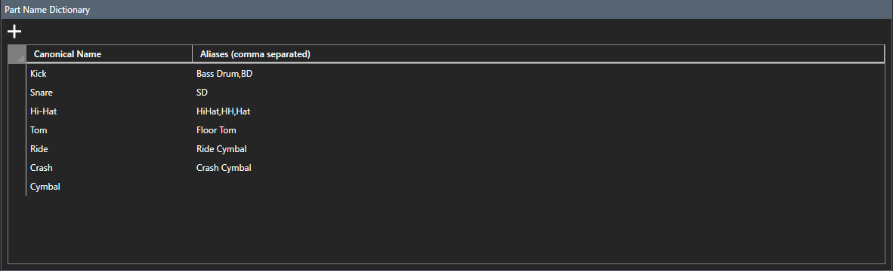

Paramètres
La page des paramètres s'affiche en cliquant sur l'icône d'engrenage en bas du menu hamburger.

Définition d'un thème
Vous pouvez choisir parmi les thèmes suivants :
- Clair
- Foncé
Vous pouvez également spécifier une couleur d'accentuation.
Définition de la langue
Vous pouvez spécifier les éléments suivants dans la zone de liste déroulante Langue :
- Anglais
- Japonais
Les modifications seront reflétées au prochain démarrage du programme.
Définition de la page de démarrage La liste déroulante Page de démarrage
vous permet de spécifier la page qui s'affiche initialement au démarrage.
Les modifications seront reflétées au prochain démarrage du programme.
Définir le chargement au démarrage
- Coché : Le dernier fichier ouvert sera automatiquement ouvert au prochain démarrage du programme.
- Non coché : un nouvel écran s'affichera.
Définition de la destination d'installation pour Cubase
Lorsque vous utilisez la fonction de partition de Cubase, spécifiez la destination d'installation.
*Si vous n'avez pas Cubase (version 14 ou ultérieure) ou si vous n'avez pas besoin de l'affichage de la partition de batterie, vous pouvez le laisser désactivé.
Définition du dictionnaire des noms de parties
Modifiez le dictionnaire de variations de notation pour les noms de parties de batterie utilisé dans « Auto Articulation Assignment » sur la page du plug-in. Nom canonique

- : saisissez le nom de la pièce (nom officiel) défini sur la page Pièce. Alias
- (séparés par des virgules) : saisissez les variantes orthographiques du nom canonique séparées par des virgules (par exemple "Bass Drum,BD"). Ajoutez une ligne avec le bouton
- +, et supprimez-la en appuyant sur la touche Suppr de la ligne sélectionnée.
Ce dictionnaire est utilisé pour définir automatiquement les articulations en déduisant les parties à partir des noms de hauteur. Veuillez vous enregistrer si les parties de batterie sont appelées différemment selon le plug-in (Kick / Bass Drum / BD, etc.).